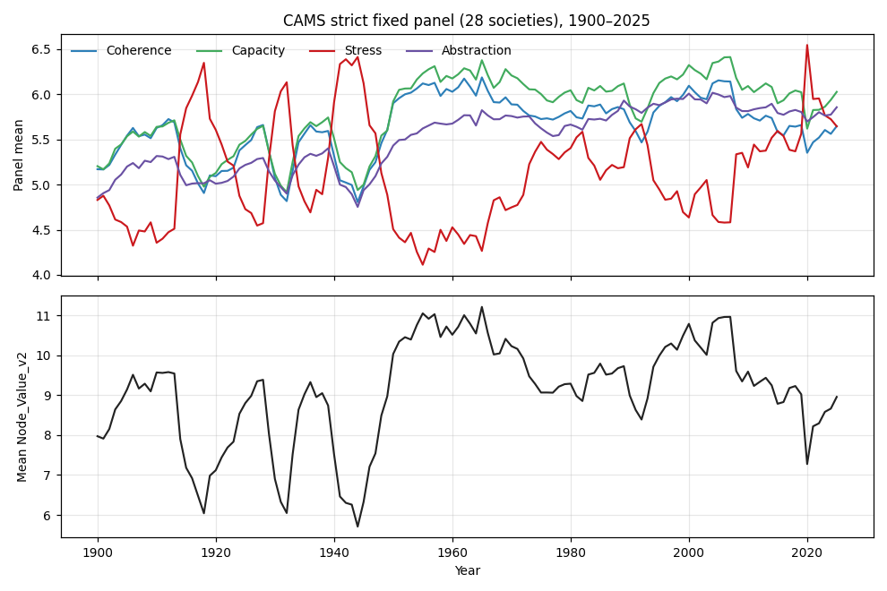
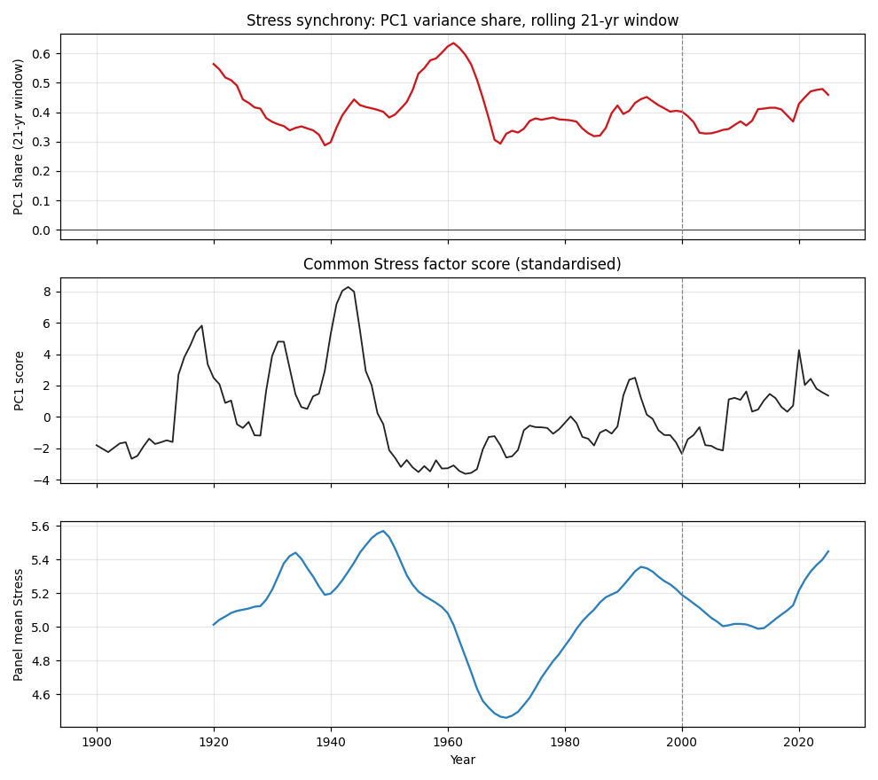
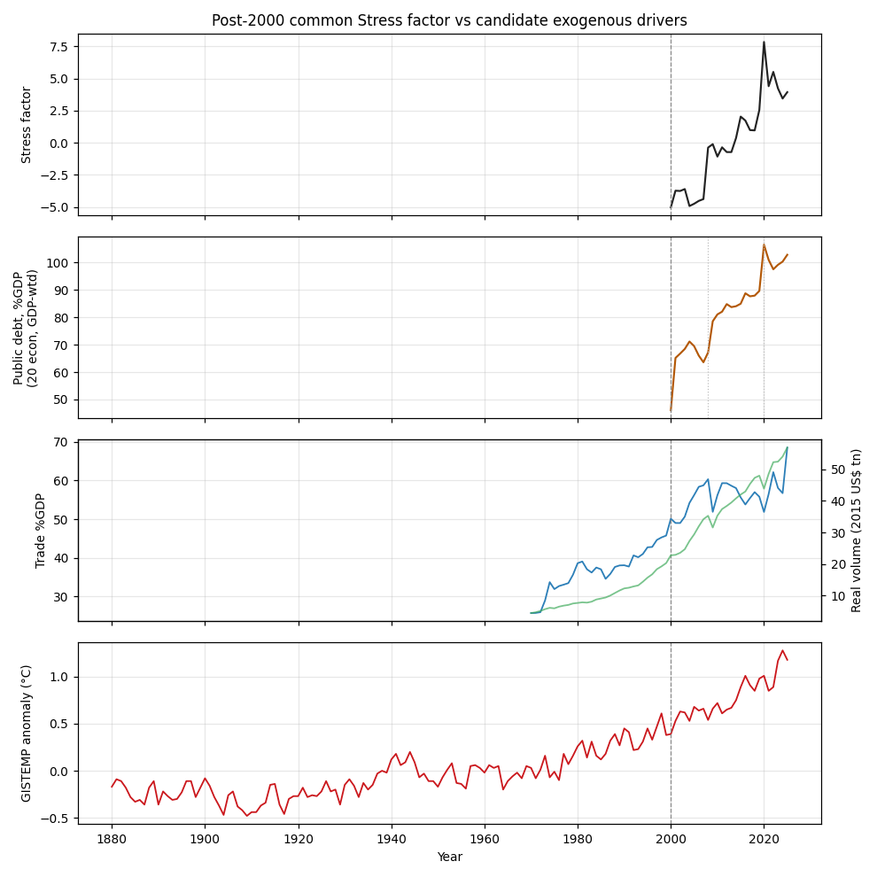
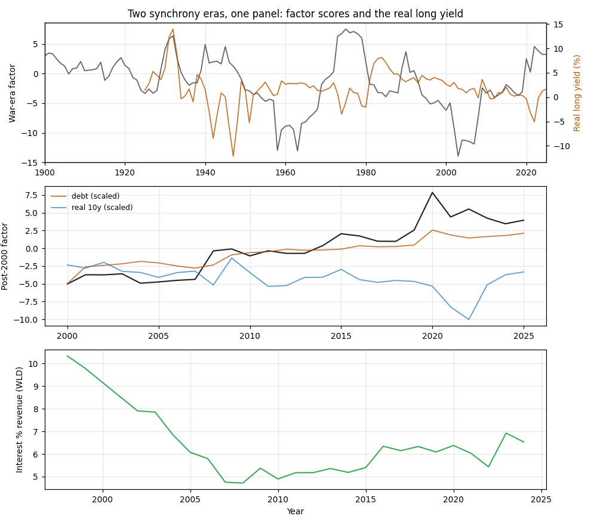

The Synchronised Slide
Global civilisational stress after 2000 in the JUNO v3 record: a common-factor analysis
Data: JUNO Unified Dataset v3 (2026-10-19), frozen-run population. Methods and reproduction notes at the end. External series: IMF WEO, World Bank WDI, NASA GISTEMP, FRED. Commentary separates data, inference and speculation throughout.
Executive summary
- The post-2000 decline in the JUNO panel is real, broad and statistically robust: 24 of 34 societies with comparable years fell in mean node value from 2000 to 2025, and Stress rose in 26 of 34. It spans the USA (−6.9), France (−4.6) and Australia (−2.6) as well as Venezuela (−10.5) and Syria (−6.4), so it is not a war effect, a sanctions effect or a Western effect.
- Stress synchrony — the share of cross-society variance carried by one common factor — jumped after 2000: 35% (1900–49), 29% (1950–99), 47% (2000–25); bootstrap 95% CI for the post-2000 jump [+8, +28] points, p ≈ 0.001.
- But the jump is a return to war-era synchrony levels, and the factor is new: the pre-2000 European-war factor explains only 9% of post-2000 variance. The post-2000 factor is nearly uniform across 26 of 28 panel societies — a global stress regime, stepping up in 2008, 2015 and 2020.
- Of the candidate exogenous drivers, only the public-debt build-up survives scrutiny: it alone correlates in levels (r = 0.93), in first differences (r = 0.52, p ≈ 0.006) and detrended (r = 0.45, p ≈ 0.02). Temperature and trade volume correlate in levels but invert on differencing — trend-matching artefacts.
- The rate rival fails: real yields add ~1 point of explanatory power over the debt stock alone (R² 0.856 → 0.865). What the record shows is a stock story: two decades of suppressed real rates enabled the debt build-up, and the 2022–25 rate normalisation has not unwound the stress — the stock is now self-sustaining.
- The 1920s–30s offer the closest precedent, with one instructive inversion. Fitted on a 1920–39 window, the stress factor tracks the real long yield at r = 0.77 (1925–39): synchronised crisis came then with rising real rates (deflation), and now with falling ones (financial repression). The common structure across both eras is debt overhang plus rate distortion.
1. Data and method
The analysis uses the frozen-run population of JUNO v3: 37 societies as defined in the pathologies progress report of 20 October 2026 — Denmark, India, Turkey, Thailand and Canada excluded in advance, Israel from 2015. Node-level work uses the 36 societies on the canonical eight-node schema (Palestine is scored on the legacy schema). The balanced panel for factor analysis is the 28 societies with at least 110 annual observations across 1900–2025; 14 missing society-years (Syria 1910–19, Italy 1901 and 2025, South Africa 1964, Sweden 1944) are linearly interpolated.
Node value throughout is the dataset's own V = C + K − S + A/2, verified to
reproduce exactly on all rows. Principal components are computed on the
society × year matrix of mean Stress, each society standardised within the
analysis window, so a common level shift cannot by itself inflate a factor's
share. Era differences are tested by bootstrap: 10,000 within-era resamples of
years, seed 20261020 for the signature work and 20261023 here. External
series and their caveats: IMF WEO general government gross debt (% of GDP,
GGXWDG_NGDP) GDP-weighted by dollar GDP across the twenty largest economies
— the data source exposes no world aggregate, and 2025–26 values are WEO
estimates; World Bank WDI world trade openness (NE.TRD.GNFS.ZS), real trade
volume (exports plus imports, constant 2015 US$), and central-government
interest payments (% of revenue, GC.XPN.INTP.RV.ZS, 1998–2024); NASA GISTEMP
land–ocean anomaly (annual, unsmoothed, through 2025); FRED GS10, DFII10,
LTGOVTBD and CPIAUCNS, with the long real yield spliced as
LTGOVTBD − CPI inflation (1925–52) and GS10 − CPI inflation (1953+).
2. The reversal and its breadth
On the strict 28-society panel, mean node value runs 7.97 (1900) → 10.03 (1950) → 10.79 (2000) → 8.96 (2025). The curve is an inverted U whose down-leg erases two-thirds of a century of scored improvement within 25 years. Mean Stress, 5.64 in 2025, is the highest year-end value since the early twentieth century. The decline is synchronised across regime types: democracies, autocracies, wartime and peacetime states fell together. Within the node structure, Lore — the meaning- and knowledge-supplying function — leads the erosion (−1.13 in mean node value from 1950–99 to 2000–25, against Helm −0.63 and Shield −0.54), while Hands remains the chronic weak node in every era examined. A slide this broad invites a common-cause question.

3. One synchrony or two?
PC1 shares of Stress variance by era: 0.354 (1900–49), 0.289 (1950–99), 0.468 (2000–25). The post-2000 jump of +17 points carries a bootstrap 95% CI of [+8, +28], p ≈ 0.001; mean pairwise correlation across societies moves the same way (0.20 / 0.14 / 0.26), so the result is not an artefact of the PCA machinery.
Two qualifications matter. First, degree: the rolling 21-year share sat at 0.55–0.63 through the 1918–45 war era, so post-2000 synchrony is a return to war-era levels, not a novelty in scale. What is novel is that synchrony is running at war levels without a world war. Second, kind: the pre-2000 factor is regional — it loads on the European and Anglosphere societies (France 0.29, Italy 0.28, Germany, the UK, the Netherlands, Norway, Poland 0.26–0.27) and negatively on Syria, Colombia and Saudi Arabia. Projected forward, that factor explains 40% of 1900–49 variance but only 9% of post-2000 variance. The post-2000 factor is nearly uniform: 26 of 28 societies load between +0.05 and +0.25, with only Saudi Arabia (−0.22) and Iraq (−0.20) negative. Its score steps up in 2008, again in 2015, and peaks in 2020 at 7.85 — the series maximum — tracking panel mean Stress at r = 0.972.
Inference: a regionally-structured war synchrony gave way around 2000 to a global, undifferentiated stress regime. Speculation: the step years — 2008, 2015, 2020 — mark financial, geopolitical and biological shocks; the regime looks less like a sequence of national stories than like one system responding to global-scale forcing.

4. What the factor tracks
Four candidate drivers were tested against the factor over 2000–25 (n = 26), in levels, first differences and detrended residuals:
| Series | Levels | First differences | Detrended |
|---|---|---|---|
| Public debt, %GDP (GDP-weighted, 20 economies) | 0.925 | 0.522 | 0.447 |
| Trade openness, %GDP | 0.357 | −0.224 | −0.486 |
| Real trade volume | 0.866 | −0.565 | −0.686 |
| Temperature anomaly | 0.801 | 0.058 | −0.156 |
Only the debt series shows dynamics: its year-to-year changes correlate at 0.52 (p ≈ 0.006) and its detrended residual at 0.45 (p ≈ 0.02). Its two steps — 46% to 67% of GDP in 2008, on to 85% by 2012, then 90% to 106% in 2020 — land on the factor's two largest jumps. The high level correlations for trade volume and temperature are trend-matching artefacts: both invert on differencing, and the falsification window shows how cheap level correlations are — the pre-2000 European-war factor correlates 0.55 with the temperature trend over 1960–99, when synchrony was historically low. Trade, if anything, anti-tracks: world trade sags in 2019–20 and 2023–25 exactly when the factor steps up.
Inference: the post-2000 stress regime co-moves with the public-debt build-up and with nothing else tested. Speculation: because the driver is policy-made, it is in principle reversible — which makes the synchrony a choice-shaped condition rather than a fate.

5. Stock or carry?
The obvious rival is the interest burden. It fails. The real 10-year yield correlates negatively with the factor (levels r = −0.59; detrended −0.24); the DFII10 TIPS real yield agrees (levels −0.55; detrended −0.46); world interest payments as a share of revenue are uncorrelated in every transformation (−0.05 / 0.10 / 0.05). In a joint model the debt stock alone gives R² = 0.856; adding the real yield buys one point (0.865); adding interest/revenue (2003–24) reaches 0.888 but with negative coefficients on both rate terms.
Inference: it is the stock, not the carry. Read mechanically: two decades of falling real yields (2.65% in 2000; −0.3% around 2012 and 2020; −5.1% in the 2022 inflation spike) enabled the accumulation, which is why the rate terms enter negatively. Speculation with a testable edge: rates normalised after 2022 (+1.7% by 2025) but the factor has not come down. If the carry mattered most, stress should have eased with normalisation; it hasn't. The stock now appears self-sustaining — debt service resists unwinding because the stock itself is the stressor. The watchable consequence is a fiscal trap: the point at which normalised rates convert a tolerable stock into an intolerable service burden, the 1930s channel re-opens, with the opposite sign.
6. The 1920s parallel
The synchrony machinery reaches back far enough to test the post-World-War analogy directly. Fitted on a 1920–39 window, the stress factor carries 29.8% of variance (PC2 20.6%) — Depression-era synchrony — and its score is calm through 1925–28 (−3 or lower), then spikes to +6.4 by 1932, the most synchronised years in the record before 2008. Against the long real yield (available from 1925), the correlation over 1925–39 is r = 0.77 (n = 15).
The parallel is structural, not cosmetic — with one inversion. Then, the crisis channel ran through rising real yields: 1.4% in 1925, 3.6% by 1929, 8.5% in 1933 as deflation exploded the real burden of war debts. Stress tracked the rise. Now, the channel has run through falling real yields — financial repression — with stress tracking the stock those rates enabled. Two synchronised eras, two opposite signs on the rate term, one common structure: debt overhang interacting with a distorted price of money. The n=15 caveat is real; a single episode cannot carry a general law. But as a preregisterable hypothesis for v4 it is hard to beat: when the stock of public debt across the major economies exceeds roughly one year's output, societal stress synchronises globally, and the sign of the rate term marks which trap — deflationary or repressionary — is doing the work.

7. Implications for CAMS
All of this section is speculation, offered for the watchlist work.
- Fiscal trajectory is a CAMS variable. The debt-to-output ratio of the major economies now behaves like a forcing function on the Stress metric across all eight nodes. A prospective watchlist should carry it alongside the frozen signatures.
- Lore leads. The meaning/knowledge node deteriorates earliest and most in the post-2000 slide. A formal lead-lag test — does Lore(t) predict society mean Stress(t+5..10) more strongly than other nodes? — is the obvious next analysis.
- Synchrony itself is a regime indicator. The rolling PC1 share is a one-number summary of how "one system" the world is; its war-era behaviour (share > 0.5) versus inter-war calm (~0.3) suggests thresholds for regime labelling.
- The corporate transfer (P4) sharpens. If the national story is "debt stock + distorted rates", the firm-level analogue is leverage plus the cost of capital. Boeing, Theranos and WorldCom differ on exactly that axis; it strengthens the case that the frozen national rules will fire differently on debt-loaded controls.
8. Limitations
Twenty-six annual observations carry the post-2000 inference; the bootstrap intervals are the honest statement of precision. The debt series covers public debt of the twenty largest economies (~85%+ of world GDP), not all-sector global debt; 2025–26 WEO values are estimates. The rate series is American — the best long proxy available, still a proxy. The factor score correlates 0.972 with mean Stress by construction, so "the factor" is partly "the mean"; the loading-structure change and the differenced correlations are the evidence that survives that objection. Four candidates were tested against the same 26-point window; with more candidates, some would pass by chance, and the report treats the debt result as co-movement, not cause. Finally, the scores are AI assessments accepted in good faith; every conclusion here is a statement about the scored record, not about the world directly.
9. Reproduction
Analysis scripts and clean CSV outputs are available from the author.
Scripts, in order: profile_juno.py, quality_juno.py, analyse_juno.py,
analyse_juno2.py, analyse_juno3.py, analyse_frozen.py,
common_factor.py, post2000_factor.py, exogenous_test.py,
rate_analysis.py. Clean CSV outputs in output/ (trends, era shares,
loadings, scores, correlations, all external extracts). Bootstrap seed
20261023. External sources: IMF WEO (accessed 23 Oct 2026; 2025–26
estimates); World Bank WDI (accessed 23 Oct 2026); NASA GISTEMP v4 annual
land–ocean index (accessed 23 Oct 2026); FRED series GS10, DFII10, LTGOVTBD,
CPIAUCNS (accessed 23 Oct 2026, vintage 2026-10-22).
References (APA):
IMF. World Economic Outlook database. General government gross debt (% of GDP), series GGXWDG_NGDP; GDP, current prices (US$), series NGDPD. Accessed 23 October 2026.
NASA Goddard Institute for Space Studies. GISTEMP v4, Land–Ocean Temperature Index, annual global means. https://data.giss.nasa.gov/gistemp/. Accessed 23 October 2026.
Board of Governors of the Federal Reserve System (US). FRED: GS10; DFII10; LTGOVTBD; CPIAUCNS. https://fred.stlouisfed.org. Accessed 23 October 2026.
World Bank. World Development Indicators: NE.TRD.GNFS.ZS; NE.EXP.GNFS.KD; NE.IMP.GNFS.KD; GC.XPN.INTP.RV.ZS. Accessed 23 October 2026.
McKern, K. (2026). CAMS interim results: six frozen signatures. Neural Nations. https://neuralnations.org/organisational-pathologies
McKern, K. (2026). JUNO Unified Dataset v3, 2026-10-19. ComplexityWorkz. Datasets.